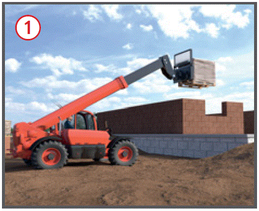
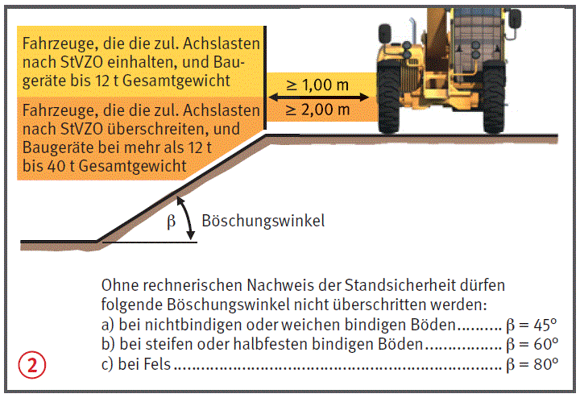

.
.
Teleskopstapler |

.Ausnahmen möglich, wenn:
 .
.| Sicherheitsabstand bei elektrischen Freileitungen |
| 1 m bis 1 kV Spannung |
| 3 m bei 1 kV bis 110 kV |
| 4 m bei 110 kV bis 220 kV |
| 5 m bei 220 kV bis 380 kV |
| 5 m bei unbekannter Spannung |

Palettengabeln
Arbeitsbühne
Haken/Hakenausleger
07/2021